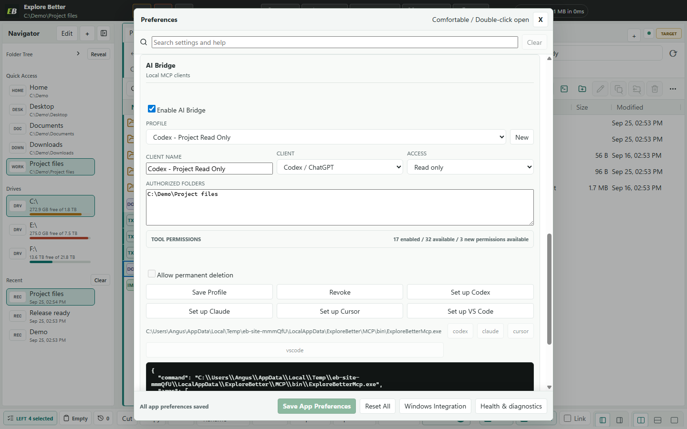
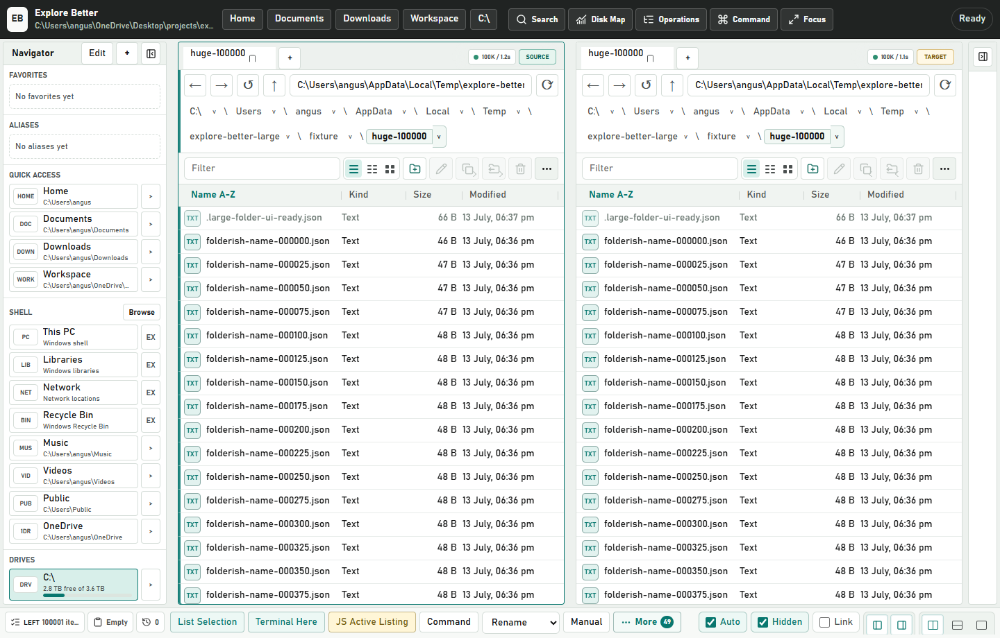
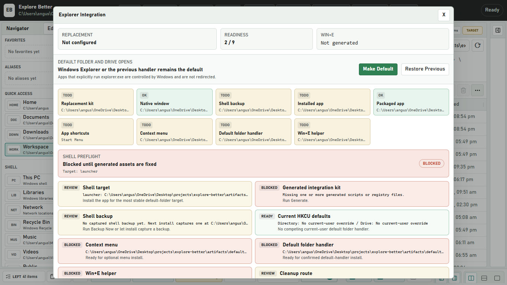

Independent by design
Vertical or horizontal panes, separate tabs, history, sorting, and view modes.

Windows 11 / Local-first / Human + AI
A serious Explorer replacement for people who have outgrown File Explorer.
Browse, search, analyze, and move files at speed. Give your AI the same live folders you see, with read-first permissions and previewed, journaled, recoverable changes.
One workspace / two operators
* Median of three runs on the same deterministic Windows fixture. MCP uses the running Explore Better host; the PowerShell baseline includes fresh process startup. A warm persistent shell may be faster. Method and raw evidence.
64.5 seconds / Real app / Real Codex run
Every beat starts with the value, then proves it in the live product. The Codex handoff uses a scoped read-only profile and is replayed at edit speed.
Sound on01 / Per-tab terminal
Every file tab can own a real Windows terminal. Open it only when needed, keep the process alive while switching tabs, and work without rebuilding paths by hand.
Ctrl + ` toggles the active pane terminal. Both pane terminals can stay open together.


02 / Local MCP AI Bridge
Explore Better exposes its live panes, indexes, Analyzer, comparisons, and recoverable operation system as typed local MCP tools for Codex, Claude, Cursor, VS Code, and other stdio clients.
03 / The workspace
Work across folders without opening a pile of windows. Each pane keeps its own tabs, history, filters, layout, and selection state.
Vertical or horizontal panes, separate tabs, history, sorting, and view modes.
Compare, filter, label, queue, rename, and transfer without losing context.
Navigator, command center, favorites, aliases, layouts, hotkeys, and scripting.
04 / One tool, many jobs
Switch the view below to inspect real screens from the current Windows build.
05 / Size Analyzer
Scan a folder or volume, compare logical and allocated size, then move through a nested treemap from broad folders down to individual files.

Exact Win32 allocated bytes with cluster-size context.
Click from a volume to a folder, then open the result in a pane.
Cached 10,000-entry Analyzer verification on the current test machine.
06 / Measured, not imagined
Windowed loading and virtualization keep the visible work small, even when the directory is not.

Windows test fixture, three measured repetitions. Results vary by machine, volume, security software, and directory contents.
07 / Operations
Copy, move, overwrite, and sync operations are staged, journaled, and recoverable after interruption.
Sibling staging, backups, durable journal phases, cancellation, pause, resume, and deterministic recovery.
Folder indexes, background content search, labels, saved searches, and responsive foreground work.
Layouts, tab groups, pane snapshots, favorites, aliases, labels, selection sets, and file baskets.
A bundled normal-user Go helper handles fast Win32 listing and exact allocated-size lookup.
Packaged Electron app, native shell entry points, auto-update feed, drag and drop, and Windows shortcuts.
Built-in viewers, checksums, duplicate finding, folder comparison, labels, collections, and explicit sync plans keep decisions inspectable.
08 / Explorer integration
Explore Better can handle normal folder and drive opens, folder backgrounds, and file-location commands for your Windows account. No administrator access is required.

Download / verify / run
The current build is a public preview distributed directly through GitHub. The app is real, the source is public, and the release hash is published—but the installer does not yet have a publicly trusted Authenticode certificate.
Windows x64 / 107.7 MB / Per-user installer / GitHub Release
Get-FileHash .\ExploreBetter-0.2.1-x64-setup.exe -Algorithm SHA256
f99de8735176cfc333a093f984b9855a3f93c17ab39548f4590302e4be7c0a61
Windows may open a “Windows protected your PC” dialog naming this installer and listing the publisher as unknown. Confirm the filename and SHA-256 above before deciding whether to use More info and Run anyway. Never disable SmartScreen globally.